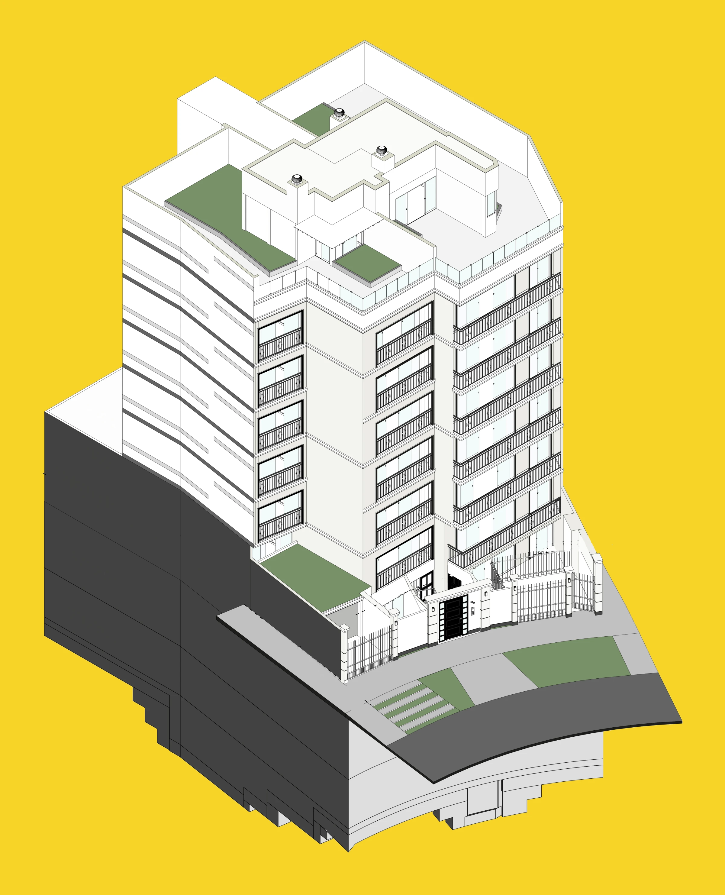
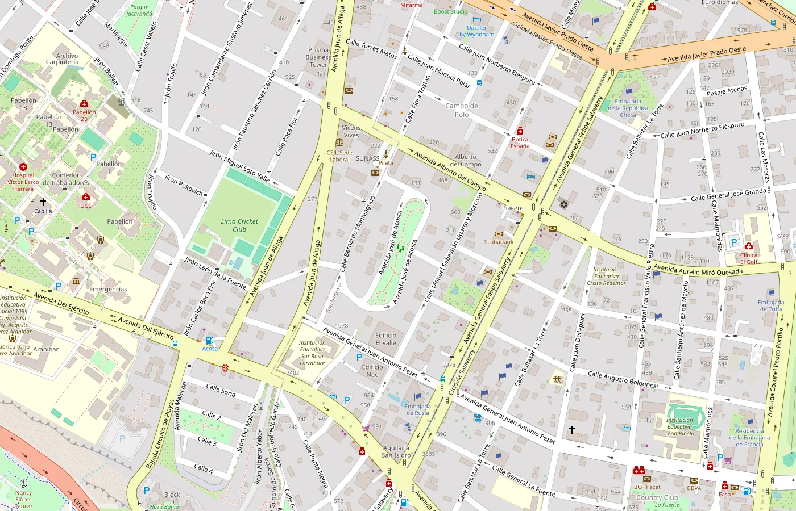

Parque Acosta 153
De 10 a 14 departamentos en el mismo terreno, en San Isidro.
- Terreno
- 500.60 m²
- Área techada
- 3,205 m²
- Niveles útiles
- 7 con semisótano
- Departamentos
- 14
- Estado
- Terminado y entregado en 2023
- Nuestro rol
- Factibilidad, gerencia de proyecto y residencia de obra
Por fuera.
El edificio terminado y los renders de venta con los que se lanzó el proyecto en 2021.
El edificio, piso por piso.
Es el modelo 3D de arquitectura y estructuras con el que se coordinó la obra. Mira la planta de cada nivel o abre el modelo 3D y córtalo piso por piso.
Las 14 unidades.
Dos departamentos por nivel, en siete niveles.
| Tipología | Unidades | Participación | Área | Dormitorios y baños |
|---|---|---|---|---|
| Total | 100 % |
Áreas techadas. Pisos 2 al 5, del plano de arquitectura; semisótano, piso 1 y piso 6, del brochure de venta (julio de 2021), redondeadas al metro cuadrado. Las terrazas y jardines del semisótano y de los dúplex suman 338 m² más. Baños contados en las plantas del brochure.
Por dentro.
Los ambientes del edificio, en los renders de venta de 2021.
Las cifras del proyecto.
- Área del terreno
- 500.60 m²
- Área techada
- 3,205.40 m²
- Área vendible
- 2,256 m²
- Eficiencia de planta (vendible / techada)
- 70 %
- Área libre
- 40.57 %
- Unidades
- 14 departamentos
- Estacionamientos
- 32
- Estacionamientos de vehículos menores
- 3
- Altura máxima de edificación
- 6 pisos + azotea
Área techada, área libre, estacionamientos, bicicletas y altura: licencia de edificación (informe técnico favorable N° E-C-2021-530, julio de 2021). Área vendible y eficiencia: caso de estudio del proyecto.
Ubicación.
Calle José de Acosta 153, frente al Parque Acosta, San Isidro, Lima.

¿Tienes un terreno? Hablemos de tu proyecto.
En una llamada de 30 minutos nos cuentas tu terreno o tu proyecto, en qué etapa está y qué quieres lograr. Sales con un siguiente paso: qué revisaríamos primero y si tiene sentido trabajar juntos.